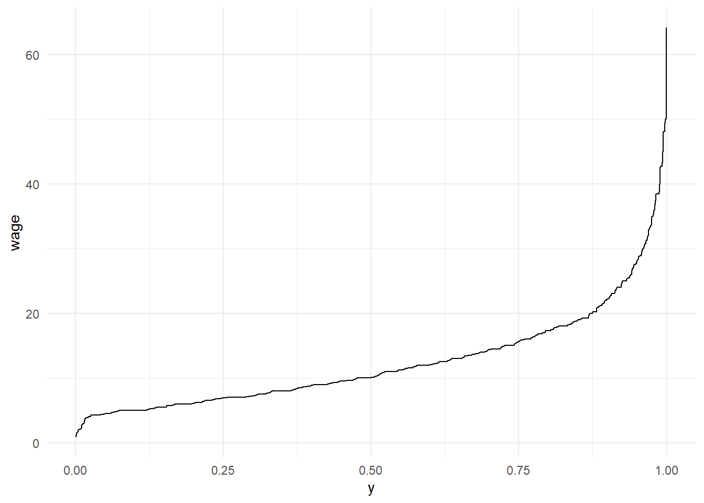

Konu 18 Dilim (Kantil) Regresyon
Bazen klasik modelin varsayım ihlallerine karşı, Sıradan En Küçük Kareler’den daha az duyarlı alternatifler olup olmadığına bakmak akıllıca olabilir diyor Gujarati.
Biz bir olasılık dağılımının temel özelliklerini genellikle ortalama (beklenen değer), varyans, çarpıklık (simetri ölçüsü) ve basıklık (sivrilik derecesi) gibi momentler denilen özet nicelikler açısından ele alırız fakat dilim regresyon ile bunlara bakmak yerine bunları dilimler olarak adlandırılan dağılımın çeşitli segmentleri içinde inceleyebiliriz.
Dilim dediğimiz şey şunlardır: Dörttebirlikler, beştebirlikler, ondabirlikler, yüzdebirlikler/yüzdelikler. Gözlem sayısını belirtilen sayılarda eşit gruplara böleriz. Örneğin, bir arabanın fiyatının 75. yüzdelik dilimde olduğunu söylemek bu arabanın fiyatının diğer arabaların fiyatlarının %75’ini aştığı anlamına gelir ya da aynı anlama gelecek şekilde %75’inin x fiyatına veya x fiyatından daha az fiyata sahip olduğunu söyleyebiliriz. Bir olasılık dağılımının %50 dilimi medyandır.
Y, kümülatif dağılım fonksiyonu ya da CDF’i F olan sürekli bir rassal değişken; p ise 0-1 arasında bir sayı olsun. Y’nin p. dilimi \(Q_p\) değeridir. Yani;
Pr(Y ≤ \(Q_p\)) = F(\(Q_p\)) = p
Örneğin, \(Q_{0.75}\) = 5 ise Y ≤ 5 olma olasılığı 0.75’e eşittir. CDF’in altında ve \(Q_p\)’nin solunda kalan kısmın alanı p; \(Q_p\)’nin sağında kalan kısmın alanı ise 1-p’dir.
Şimdi dilim regresyon modeline bakabiliriz.
library(readxl);library(tidyverse);library(magrittr);library(quantreg)
setwd("C:/Users/datanerd/Desktop/Github/rEkonometri/data")
df <- read_excel("Table1_1.xls")Sıradan En Küçük Kareler çıktısını hatırlayalım:
model <- lm(formula = wage ~ female + nonwhite + union + education + exper, data = df)
summary(model)##
## Call:
## lm(formula = wage ~ female + nonwhite + union + education + exper,
## data = df)
##
## Residuals:
## Min 1Q Median 3Q Max
## -20.781 -3.760 -1.044 2.418 50.414
##
## Coefficients:
## Estimate Std. Error t value Pr(>|t|)
## (Intercept) -7.18334 1.01579 -7.072 2.51e-12 ***
## female -3.07488 0.36462 -8.433 < 2e-16 ***
## nonwhite -1.56531 0.50919 -3.074 0.00216 **
## union 1.09598 0.50608 2.166 0.03052 *
## education 1.37030 0.06590 20.792 < 2e-16 ***
## exper 0.16661 0.01605 10.382 < 2e-16 ***
## ---
## Signif. codes: 0 '***' 0.001 '**' 0.01 '*' 0.05 '.' 0.1 ' ' 1
##
## Residual standard error: 6.508 on 1283 degrees of freedom
## Multiple R-squared: 0.3233, Adjusted R-squared: 0.3207
## F-statistic: 122.6 on 5 and 1283 DF, p-value: < 2.2e-16wage değişkeninin dağılımına bakalım.
wage denilen saatlik ücretin sağa doğru uzanan bir kuyruğu olduğunu görüyoruz. Yani, veriler sağa çarpıktır. Buna bakmanın diğer iki yolu aşağıdaki gibidir.
Kümülatif dağılım:
Kümülatif dağılım fonksiyonun tersi dilimlerdir (\(Q_p = F^{-1}\)).

Modeli kurabiliriz. İlk olarak 50. yüzdelik dilimin (medyan) sonuçlarına bakalım.
##
## Call: rq(formula = wage ~ ., tau = 0.5, data = df)
##
## tau: [1] 0.5
##
## Coefficients:
## Value Std. Error t value Pr(>|t|)
## (Intercept) -5.92744 0.70550 -8.40174 0.00000
## female -2.78430 0.31616 -8.80670 0.00000
## nonwhite -0.82269 0.38292 -2.14848 0.03186
## union 1.67795 0.40668 4.12594 0.00004
## education 1.17843 0.04617 25.52450 0.00000
## exper 0.15224 0.01418 10.73325 0.00000education’daki 1 birimlik değişim ortalama saatlik ücrette 1.37 $’lık (bir önceki çıktıya bakın) artışa neden olmaktadır şeklinde yorumluyorduk. Bunu artık 1 birimlik bir değişime karşın medyan ücret oranındaki değişim olarak yorumlayacağız.
exper 1 yıl arttığında medyan ücret 0.15 $ artar (bir önceki çıktıyla neredeyse aynı).
Kadınların medyan ücreti erkeklerden 2.78 $ daha düşüktür (female).
Sendikalı işçilerin medyan ücreti sendikalı olmayan işçilerden 1.68 $ daha yüksektir (union).
Beyaz olmayanların medyan ücreti beyaz işçilerden 0.82 $ daha düşüktür (nonwhite).
Karşılaştırma yapmak amacıyla 25. ve 75. dilimleri de ekleyelim. regresyon istenilen bir dilimde kurulabilir.
##
## Call: rq(formula = wage ~ ., tau = 0.25, data = df)
##
## tau: [1] 0.25
##
## Coefficients:
## Value Std. Error t value Pr(>|t|)
## (Intercept) -2.10096 0.71646 -2.93244 0.00342
## female -2.04231 0.25255 -8.08660 0.00000
## nonwhite -0.94423 0.19874 -4.75113 0.00000
## union 2.45385 0.27365 8.96705 0.00000
## education 0.70385 0.05933 11.86407 0.00000
## exper 0.09904 0.01109 8.93143 0.00000##
## Call: rq(formula = wage ~ ., tau = 0.75, data = df)
##
## tau: [1] 0.75
##
## Coefficients:
## Value Std. Error t value Pr(>|t|)
## (Intercept) -8.17417 1.12813 -7.24574 0.00000
## female -3.70917 0.46120 -8.04239 0.00000
## nonwhite -1.50667 0.45322 -3.32439 0.00091
## union 0.68000 0.60359 1.12659 0.26013
## education 1.55250 0.07796 19.91333 0.00000
## exper 0.25333 0.02158 11.73927 0.00000Dilim parametreleri kendi aralarında istatistiksel olarak farklılaşır mı? Aşağıdaki test ile parametre değerlerinin dilimler arasında aynı olduğu hipotezini güçlü bir şekilde reddediyoruz.
## Quantile Regression Analysis of Deviance Table
##
## Model: wage ~ female + nonwhite + union + education + exper
## Joint Test of Equality of Slopes: tau in { 0.25 0.5 0.75 }
##
## Df Resid Df F value Pr(>F)
## 1 10 3857 17.846 < 2.2e-16 ***
## ---
## Signif. codes: 0 '***' 0.001 '**' 0.01 '*' 0.05 '.' 0.1 ' ' 1